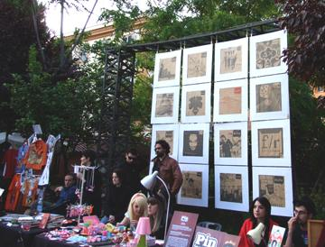

2008 · Collaborazione · Featuring · Busta
Fronte/Retro
Copertine per Busta, un tema al mese
Concorso aperto a tutti per la copertina di Busta, distribuita nei locali e nei negozi di tutta Italia: ogni mese un tema e una copertina scelta da una giuria.
Opere 62


La serata 1 foto


Artisti 34
Alessia MastrifortiAndrea De MarcoAnita SanvittoApartment4Azzurra VisaggioChiara AttorredesignerincertoElisabetta CalabrittoEmanuele TaglieriEmiliano TrapaniFilippo RiccaGiacomo BevilacquaGiuliano SaccoKrayonLorenzo TicciLuca LeddaLuca QuagliottiLumpys BoysMarco De MatteoMarco ScozzaroMarco SmiroldoMichele MariMirko Riccipsychoboy54SaVe DesignSimon LaudatiSimona ScintuStefano BucciStefano ColferraiStefano DavidStefano La FerlaValentina BazzacchiValentina Perinivincentunderground
GRA — Genuine Roman Art · RomaOpere © i rispettivi autori